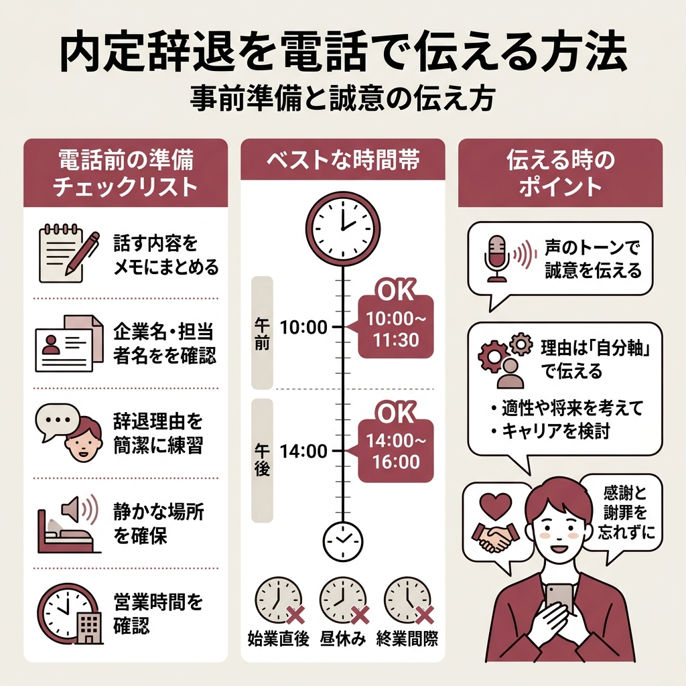
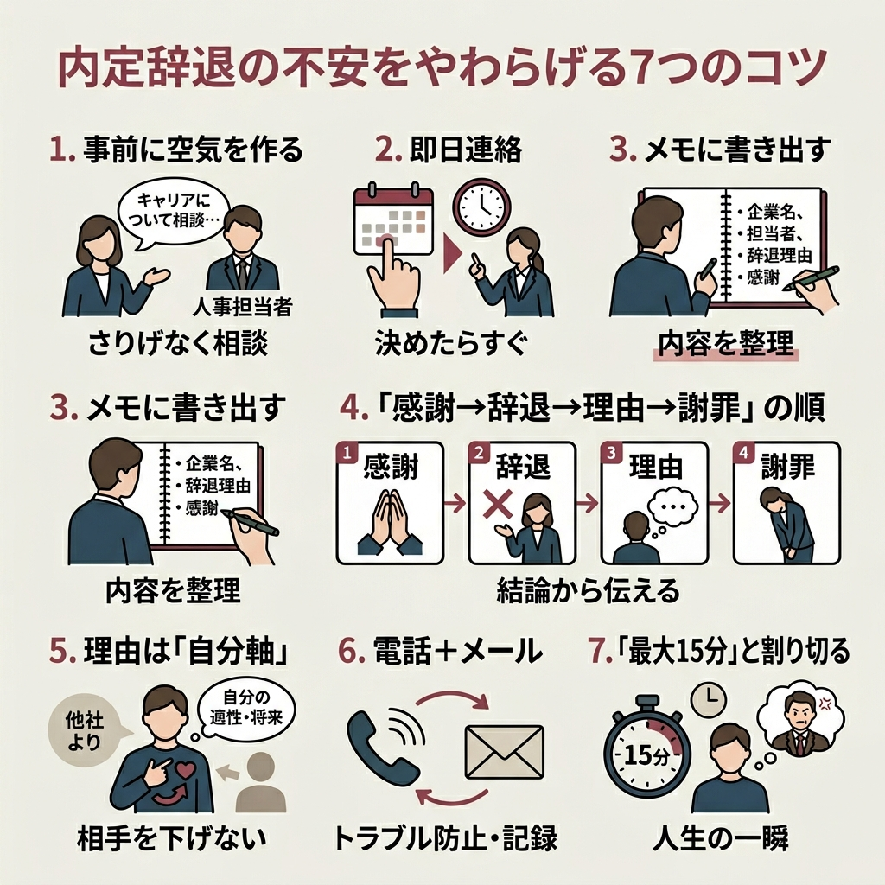
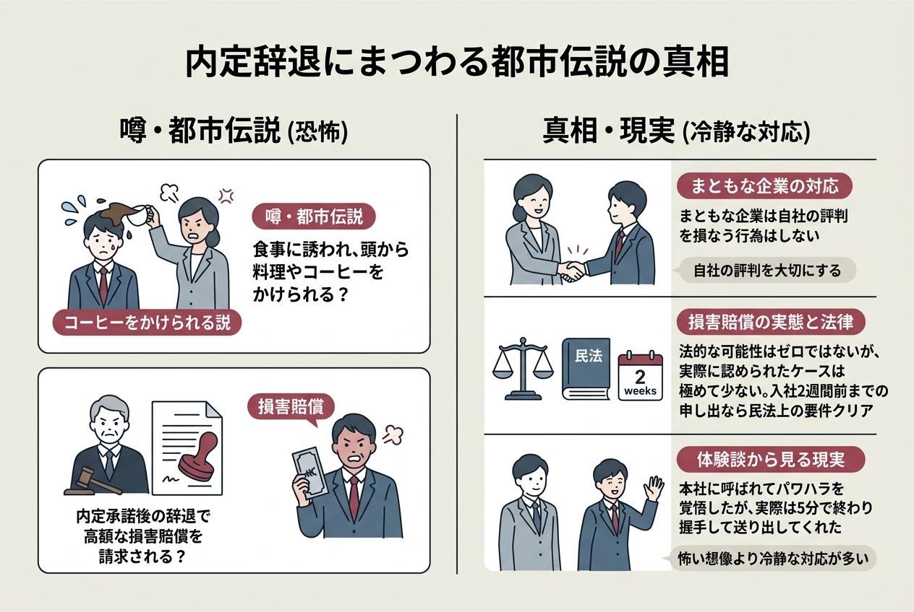
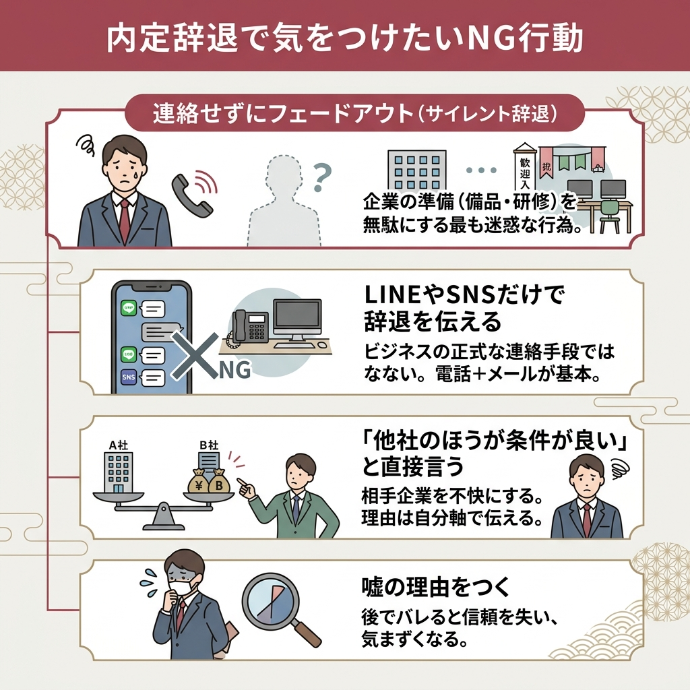

「内定辞退の電話、怖すぎてかけられない」…上位記事を片っ端から読んでみたら、同じ悩みを抱えている人がとにかく多いことに気づきました。
怒られるんじゃないか、損害賠償を請求されるんじゃないか、大学に迷惑がかかるんじゃないか。
結論から言うと、マナーを守って誠実に伝えれば、怒られることはほぼありません。
この記事では、内定辞退の電話・メールの具体的な例文から、怖さをやわらげるコツ、法的な権利の話まで、一通りまとめています。
2026年4月時点の情報をもとに書いているので、「古い情報じゃない？」という心配も不要ですよ。
まず安心してほしいのが、内定辞退を怖いと感じるのはごく自然な反応だということです。
就職みらい研究所の調査によると、2025年6月時点で26卒学生の内定辞退率は53.9%にのぼっています。
つまり半数以上の人が内定辞退を経験しているんですよね。
怖いと感じるのは、相手の気持ちを考えられる人だからこそ。
企業側だって、一定数の辞退が出ることは最初から想定して採用計画を立てています。
「申し訳ない」と思える気持ちがある時点で、あなたの対応は十分誠実なものになるはずです。
でも、実際に怒られた人の話をネットで見たんですが…
ゼロとは言いませんが、まともな企業なら怒りません。上位記事を調べた限り、9割以上のケースで「残念ですが頑張ってください」で終わっています。
上位記事を読み比べていくと、怖さの原因はだいたい3パターンに集約されます。
これが圧倒的に多い理由みたいです。
面接で優しかった人事が豹変するんじゃないか、冷たい態度をとられるんじゃないか。
確かに企業は採用にかなりのコストをかけています。
ただ、企業も複数の候補者に内定を出していて、辞退者が出ることは織り込み済みなんですよね。
マナーを守って丁寧に伝えれば、怒られる可能性はかなり低いです。
「自分が辞退したら後輩の就活に影響するのでは？」という不安も見かけました。
結論としては、よほど非常識な辞退をしない限り、大学のイメージに影響することはほぼありません。
企業もブランドイメージを守る立場なので、1人の辞退で大学全体を拒絶するような採用はしないと考えて大丈夫です。
ネット上には「本社に呼ばれた」という体験談もあります。
ただし、呼び出しに応じる法的義務はありません。
内定の段階では正式な雇用契約が結ばれていないため、「申し訳ございませんが、お伺いすることはできかねます」と断って問題ないです。
「内定辞退って法律的にアウトじゃないの？」という疑問、上位記事でもかなり多く取り上げられていました。
まず整理しておきたいのが、「内定辞退」と「内定承諾後辞退」は別物だということ。
内定をもらっただけの段階と、承諾書にサインした後では、状況が変わります。
| 項目 | 内定辞退 | 内定承諾後辞退 |
|---|---|---|
| 段階 | 承諾前 | 承諾書提出後 |
| 労働契約 | 未成立が多い | 成立と解釈される |
| 企業への影響 | 比較的小さい | 入社準備が進んでいる分、大きい |
どちらの場合でも、辞退自体は法的に認められています。
民法627条第1項では、労働者はいつでも労働契約の解約を申し入れることができるとされています。
当事者が雇用の期間を定めなかったときは、各当事者は、いつでも解約の申入れをすることができる。この場合において、雇用は、解約の申入れの日から二週間を経過することによって終了する。
e-Gov法令検索｜民法（明治二十九年法律第八十九号）
つまり、内定承諾書にサインした後でも辞退は可能です。
ただし、企業が入社準備を進めている場合もあるので、辞退を決めたらできるだけ早く連絡するのが鉄則ですね。

上位記事のほぼすべてが「電話で伝えるのがベスト」と書いていました。
個人的にも、声のトーンで誠意を伝えられる電話がいいと思います。
いきなりかけると頭が真っ白になるので、事前準備が大事です。
メモを手元に置いておくだけで、緊張がだいぶ和らぎますよ。
かける時間帯にもマナーがあります。
始業直後、昼休み、終業間際は避けるのが基本。
午前なら10時〜11時半、午後なら14時〜16時が比較的つながりやすいとされています。
上位記事のある体験談では「12時45分に電話したら人事がいなくてラッキー」なんてエピソードもありましたが、わざわざ不在を狙うのはおすすめしません。
結局かけ直されて余計に気まずくなるパターンが多いです。
上位記事で紹介されていた例文をベースに、自然な流れを整理しました。
「お忙しいところ恐れ入ります。先日内定のご連絡をいただきました○○大学の○○と申します。採用担当の○○様はいらっしゃいますでしょうか」
（担当者に代わったら）
「お世話になっております。○○大学の○○です。ただいまお時間よろしいでしょうか」
「ありがとうございます。大変申し上げにくいのですが、検討を重ねた結果、御社よりいただきました内定を辞退させていただきたく、ご連絡いたしました」
（理由を聞かれた場合）
「並行して選考を受けていた企業からも内定をいただき、自分の適性や将来を考えた結果、そちらへの入社を決意いたしました。御社にも大変魅力を感じておりましたので、非常に悩みました」
「内定をいただいたにもかかわらず、このようなご連絡となり誠に申し訳ございません。選考に貴重なお時間をいただき、本当にありがとうございました」
理由は正直に言わないとダメですか？他社のほうが給料が良いからとは言いにくい…
正直に話すのが基本ですが、相手を下げるような理由は避けてください。「自分の適性を考えて」「将来のキャリアを検討した結果」のように、自分軸で伝えるのがコツです。
「どうしても電話が無理…」という人、いると思います。
基本は電話がベストですが、メールで伝えてもいいケースもあります。
以下のような場合は、メールでの辞退連絡でも問題ありません。
ただしメールだけの場合、見落とされるリスクがあります。
送った後に返信がなければ、数日以内に電話でフォローするのがいいですね。
件名：内定辞退のご連絡（○○大学 氏名）
△△株式会社 人事部 ○○様
お世話になっております。先日内定をいただきました○○大学の○○です。
この度、誠に勝手ながら、貴社への入社を辞退させていただきたくご連絡いたしました。
他社からも内定をいただき、慎重に検討した結果、そちらの企業への入社を決意いたしました。
内定をいただいたにもかかわらず、このような結果となり心よりお詫び申し上げます。
選考に際し貴重なお時間をいただきましたこと、改めて感謝申し上げます。
末筆ではございますが、貴社のますますのご発展をお祈り申し上げます。

ここからは、上位記事の情報と体験談を踏まえて、怖さを減らすための具体的な方法をまとめました。
内定承諾後も人事と接する機会があれば、「キャリアについてまだ悩んでいる」とさりげなく伝えておくと、辞退のハードルがぐっと下がります。上位記事の体験談でも「サプライズを作らない」ことが円滑な辞退のコツとして紹介されていました。
先延ばしにするほど、企業の入社準備は進みます。連絡が遅れるほど迷惑度が上がるので、決めたら即行動が鉄則です。
頭の中で考えるだけだと、電話中に飛んでしまいます。企業名、担当者名、辞退理由、感謝の言葉をメモにまとめておくだけで、落ち着いて話せます。
この流れを体に叩き込んでおけば、パニックにならずに済みます。結論を先に伝えるのがコツ。
「御社より他社のほうが良い」ではなく、「自分の適性や将来を考えた結果」という言い方に。相手を下げずに断れます。
電話で伝えた後にメールでも連絡しておくと、「言った言わない」のトラブルを防げます。企業にとっても記録が残るので親切です。
万が一怒られたとしても、電話は長くて15分。上位記事の体験談では、呼び出された人でさえ5分で解放されていました。人生全体で見れば一瞬です。
個人的には3番目の「メモ」がいちばん効果的だと思っています。
書き出すだけで不安が具体化されて、「意外といけるかも」と感じられるんですよね。

上位記事を漁っていたら、なかなかすごいエピソードが出てきました。
都市伝説なのか実話なのか判断しにくいものもありますが、知っておくと安心材料になるかなと。
辞退を伝えに行った学生が、人事に食事に誘われ、そこで料理やコーヒーを頭からかけられたという話。
正直、これがどこまで本当かはわかりません。
ただ、こういう話が広まること自体が、内定辞退への恐怖を増幅させている気がします。
まともな企業であれば、自社の評判を損なうようなことはしません。
法的には、内定承諾後の辞退で企業側が損害を証明できた場合に限り、請求される可能性はゼロではないとされています。
でも、実際に請求されて認められたケースは極めて少ないみたいですね。
入社予定日の2週間前までに辞退を申し出ていれば、民法上の要件は満たしています。

円満に辞退するために、避けるべき行動もあります。
特にサイレント辞退は絶対にやめたほうがいいです。
企業はあなたの入社に向けて備品の準備や研修の手配を進めている可能性があります。
連絡が取れないと、企業側は対応のしようがないんですよね。
上位記事でも「サイレント辞退が一番迷惑」という人事の声が複数ありました。
内定承諾後に辞退するのと、承諾前に辞退するのでは、伝え方を変えたほうがいいですか？
承諾後のほうが企業への影響が大きいので、より丁寧に伝える必要があります。「一度お約束したにもかかわらず」というお詫びを入れると誠意が伝わりますよ。
承諾後の辞退は、承諾前と比べてハードルが少し上がります。
企業がすでに社会保険の手続きや備品の購入を進めている可能性もあるからです。
基本の流れは承諾前と同じですが、いくつか追加で気をつけたい点があります。
特に老舗企業や紹介を受けた企業の場合、手書きのお詫び状を送ると誠意が伝わります。
2行で済む話なんですけど、エージェント経由なら担当者に伝えればOKです。
エージェントが企業との間に入って辞退を伝えてくれるので、直接電話する必要がありません。
「言いづらいことを代わりに伝えてくれる」のはエージェントの大きなメリットですね。
都市伝説みたいな話を聞くと怖くなるんですが、実際どのくらいの確率で嫌な思いをするんでしょう？
上位記事を総合すると、9割以上は穏やかに終わるようです。不快な対応を受けた体験談はごく一部で、むしろ「頑張ってね」と送り出してもらえたケースのほうが圧倒的に多いですよ。
辞退の電話が終わったら、ほっとするのもつかの間。
次のステップも押さえておきましょう。
電話で辞退を伝えた当日中に、確認のメールを送っておくのがおすすめです。
「本日はお電話でお時間をいただきありがとうございました」と一言添えるだけで、言った言わないのトラブルを防げます。
辞退した後にモヤモヤが残る人もいるみたいです。
でも上位記事の体験談を見ていると、辞退した当日にスキップしながら友達と遊びに行った人もいました。
切り替えの速さは人それぞれですが、辞退は「自分のキャリアを選ぶ行為」なので、罪悪感を引きずる必要はありません。
内定辞退の電話は、たぶん就活で一番やりたくない作業のひとつだと思います。
でも、ちゃんと調べてみたら「怖い」と感じるほどの事態にはまずならないことがわかりました。
メモを準備して、深呼吸して、かけてみてください。